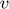
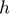
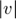
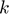

MXB103 Project Group 18: BUNGEE!
Contents
- 1 Introduction test
- 2 The proposal
- 3 The model
- 3.1 Assumptions and limitations
- 3.2 Parameters
- 4 The numerical method
- 4.1 Parameters
- 4.2 Solution
- 5 Analysis
- 5.1 Timing and bounces
- 5.2 Maximum speed experienced by the jumper
- 5.3 Maximum acceleration experienced by the jumper
- 5.4 Distance travelled by the jumper
- 5.5 Automated camera system
- 5.6 Water touch option
- 6 Conclusion
1 Introduction test
As part of Brisbane's "New World City" transformation, the Brisbane City Council is investigating a proposal to allow bungee jumping off the Story Bridge. This report addresses several key questions about the proposal.
In Section 2 of this report, the proposal and the key questions relating to it are discussed in more detail. In Section 3, the model ... In Section 4, etc.
2 The proposal
What is the proposal exactly? What questions have you been asked to answer? What's your approach to doing this? A few paragraphs should be enough. Finish with a sentence linking to the next section on the model.
This proposal aims to realistically model the motion of a bungee jumper given the jumping parameters provided by the Brisbane City Council. Specifically, analysis of the distance, speed and acceleration experienced by the jumper must be understood in order to propose how to maximise user experience while maintaining safe levels of force and speed throughout the experience.
The most important factor in this project is arguably the levels of acceleration experienced at the extremeties of a "bounce". This acceleration must be less than 2 not only to ensure the safety of users but to also ensure the bungee cord is able to elastically recover from a user's jump and be reliable over its lifetime. Additionally, velocity and position (both integrals of the acceleration) can be analysed to inform decisions on other company services such as the mid-jump camera and water-touch options they plan to investigate. Numerical methods of approximation and interpolation are easily applied to the equations of motion aforementioned to enable the company to better make these decisions.
Specifically, the following report uses the Second Order Taylor Series Method in order to model to motion of a person during a bungee jump session. This method has been applied to the equations discussed in section 3 as it is appropriate for solving Ordinary Differential Equations (ODEs) in the time domain.
3 The model
The equation of motion for bungee jumping is

Write a paragraph or two about the equation, including where it comes from and what the symbols mean.
The equation above models the acceleration of a bungee jumper over time as the derivative of the velocity over time (second derivative of position over time). In other words, the acceleration of the jumper at any point in time can be determined by determining the change in the rate of change of position. Acceleration at any one point in time depends on three main components:
1. There is the constant downward acceleration due to gravity of 9.8 m/s/s
2. There is a deceleration (opposition to movement in any direction) due to air resistance who’s magnitude depends on the drag coefficient of the air (), mass of the jumper () (note that = / ) as well as the speed of the jumper ().
3. Finally, the jumper will “bounce” away from the water due to the tension in the bungee cord. Hence, at the maximum amplitude of a bounce (as determined by the length,  , and elasticity, , of the bungee cord), the jumper will decelerate in the positive direction, accelerate slightly in the negative direction until the bungee rope becomes slack again and have an upward velocity until they are overcome by the acceleration due to gravity once more.
, and elasticity, , of the bungee cord), the jumper will decelerate in the positive direction, accelerate slightly in the negative direction until the bungee rope becomes slack again and have an upward velocity until they are overcome by the acceleration due to gravity once more.
For each “bounce” cycle, some energy is lost to the air resistance, temperature of the bungee cord/ air etc. which causes decay in the amplitude of the bungee bounces until the jumper is left hanging from the bridge. Once a relatively steady state has been achieved like this (acceleration in either direction approaches zero), the jump can be said to be over.
3.1 Assumptions and limitations
Write a paragraph on the assumptions and limitations on the model, and a paragraph on the limitations on the study you have conducted.
The key assumptions made in the following model used are that the jumper does not leave the platform with any initial force and that they weigh exactly 80kg. For example, if the jumper pushed off the platform or jumped up and over the ledge, this would affect the acceleration they experience over the subsequent free-fall period in the first oscillatory period of the jump (acceleration is a summative vector). Additionally, the force experienced by an object is proportional to the product of their mass and acceleration, meaning a heavier jumper will require more force to stop at the extremities of a “bounce”. This will put more stress on the bungee cord and may also result in a larger bounce amplitude overall given the greater inertia of the jumper. If these assumptions are not realised, it may result in higher than expected accelerations and forces experienced throughout a jump that could potentially be unsafe/ harmful to users. It is recommended that the assumed mass of the jumper and allowable stress on the bungee cord have an incorporated factor of safety to mitigate sensitivity to these assumptions the model is based on.
This model is also limited to two-dimensional movement in the  direction. It does not account for any “swinging” or external forces such as wind and it is very likely that these external forces will be present to some degree in a real-life scenario. The model is also based on the first 60 seconds of jump for this specific scenario. Movement beyond this period of time has not been accounted for even though there is still residual oscillation in a jumper’s “bouncing”.
direction. It does not account for any “swinging” or external forces such as wind and it is very likely that these external forces will be present to some degree in a real-life scenario. The model is also based on the first 60 seconds of jump for this specific scenario. Movement beyond this period of time has not been accounted for even though there is still residual oscillation in a jumper’s “bouncing”.
3.2 Parameters
H = 74; % Height of jump point (m) D = 31; % Deck height (m) c = 0.9; % Drag coefficient (kg/m) m = 80; % Mass of the jumper (kg) L = 25; % Length of bungee cord (m) k = 90; % Spring constant of bungee cord (N/m) g = 9.8; % Gravitational acceleration (m/s^2) C = c/m; % Scaled drag coefficient K = k/m; % Scaled spring constant
4 The numerical method
How do you formulate the model to solve numerically? (hint: you write it as two equations)
The Second Order Taylor Method is more accurate in modelling ODEs than the Euler Method as it uses more terms to model a function over each subinterval. Second Order Taylor Series models take the form:
For a given timestep. We can remove the error term and replace the exact solution with an approximation to produce:
For this situation, is position (), is velocity () and is acceleration for a time interval of size .
NOTE that:
and
4.1 Parameters
T = 60; % Final time in simulation (s) n = 10000; % Number of subintervals (you decide how many you need)
4.2 Solution
The ordinary differential equations are solved using the Second Order Taylor Series Method.
[t, y, v, h] = euler_bungee(T, n, g, C, K, L); % (you must change this to a second order or higher method) % second order taylor method [tm, ym, vm, hm, am] = SecOrdTay_bungee(T, n, g, C, K, L); %RK4 Method %[trk, yrk, vrk, hrk] = RK4_bungee(T, n, g, C, K, L); figure(1); plot(t, y, 'b'); hold on plot(tm, ym,'r--'); %plot(trk, yrk,'--'); xlabel('time (s)'); ylabel('distance fallen (m)'); title('Figure 1: Bungee Jump Using Eulers Method vs Second Order Taylor Method'); legend('Euler', 'Second Order Taylor') %legend('Euler', 'Second Order Taylor', 'RK4')
5 Analysis
In this section, the model predictions are analysed with respect to the key questions being asked about the proposal.
5.1 Timing and bounces
Describe the question, and then answer it. In this case, you will refer to Figure 1 of versus  .
.
The model produced above as a result of using a higher order modelling method (Second Order Taylor Method) agrees with the company's claim of 10 "bounces" in 60 seconds (as seen in Figure 1). While both models agree on the general behaviour regarding bounce frequency, the Second Order Taylor Series Model should produces a slightly more accurate prediction over time than the Euler Model. This is because, by using a higher order method, the error term in the Taylor model decays by an order of magnitude (tenfold) faster (i.e. it consequently accumulates less error given the same number of iterations). Specifically, the Second Order Taylor Method works by taking the position of the jumper () and adds the velocity of the jumper for a given time step interval (), same as the Euler Method. However, the Taylor Method also includes the additional acceleration term (velocity derivative) that is scaled by ^2/2. In this case the extra term makes the model more robust/ realistic to the reduction in downward acceleration when the bungee rope is in tension (when > ). The explicit consideration of the bungee rope’s opposition to downward motion logically results in the model coming to a rest/ equilibrium state ever so slightly faster (less “bouncing” as a result of faster periodic amplitude decay) than when it is not included.
5.2 Maximum speed experienced by the jumper
Describe the question, and then answer it. In this case, you will create a figure of versus and refer to it to answer the question.
As can be seen in Figure 2, the maximum speed of the jumper is achieved at the moment before the first upward bounce (i.e. the last moment of freefall from the inital jump from the platform). At this moment (approximately 3 seconds after the jump) the jumper is travelling at approximately 20.0325m/s. This is logical as the resistive force of the bungee rope has not yet begun to contribute to decay in the bounce amplitude and as such the inertia of the jumper is at its maximum as they have been in uninterrrupted freefall due to gravity.
figure(2); plot(t, vm); %hold on %plot(t, vrk); xlabel('time (s)'); ylabel('jumper velocity (m/s)'); title('Figure 2: Bungee Jump Velocity Over Time (Taylor Series Modelling)'); maximum_speed = max(abs(vm)); fprintf('Maximum speed: %fm/s\n', maximum_speed);
Maximum speed: 20.035890m/s

5.3 Maximum acceleration experienced by the jumper
Describe the question, and then answer it. In this case, you will call a function to numerically differentiate to find . Then plot versus and refer to it to answer the question.
The maximum acceleration the bungee jumper will experience will occur when the bungee rope stretches and recoils after the initial jump off the platform, as seen in Figure 3. This is because the jumper will be experiencing maximal inertia due to their freefall from gravity upon the first "bounce" and thus a relatively large amount of acceleration in the negative direction will occur (the deceleration occurs over a shorter period than the freefall time and thus requires a larger magnitude) in order to pull the jumper back up. The absolute magnitude of this acceleration is approximately “2 ” (19.6m/s/s) as the company claims. Specifically, jumpers will experience 18.3949m/s/s at this moment (approximately 5 seconds after the initial jump).
figure(3); plot(t, am); title('Figure 3: Bungee Jump Acceleration Over Time (Taylor Series Modelling)'); xlabel('time (s)'), ylabel('acceleration (m/s/s)') max_accel = max(abs(am)); fprintf('Maximum acceleration: %fm/s/s\n', max_accel);
Maximum acceleration: 18.394937m/s/s
5.4 Distance travelled by the jumper
Describe the question, and then answer it. In this case, you will call a function to numerically integrate  to find the distance.
% As we already have values for velocity over time we can use them to % calculate distance. By integrating the absolute values of velocity we are % given distance using the trapazoidal method. The absolute value must be % used as using negate velocity values would result in an incorrect answer. % This is because we want the total distance travelled in both directions. % Jumpers will travel approximately 286m total over the 60s jump. ty= abs(vm); t0 = 0; t60 = 60; format shortEng; distance = numeric_integration(t0, t60, n, ty); fprintf('Distance travelled: %fm\n', distance);
Distance travelled: 286.457448m
5.5 Automated camera system
Describe the question, and then answer it. In this case, you will fit an interpolating polynomial through the four points in your solution that lie either side of the camera location. Then use that polynomial to solve for when the jumper passes the camera.
5.6 Water touch option
Describe the question, and then answer it. In this case, you will re-solve the equations with different parameters for and . Experiment to find which values work best for the water touch option, but include only the best combination that you found in the submitted code.
6 Conclusion
Conclude your report by summing up your findings and making any recommendations.